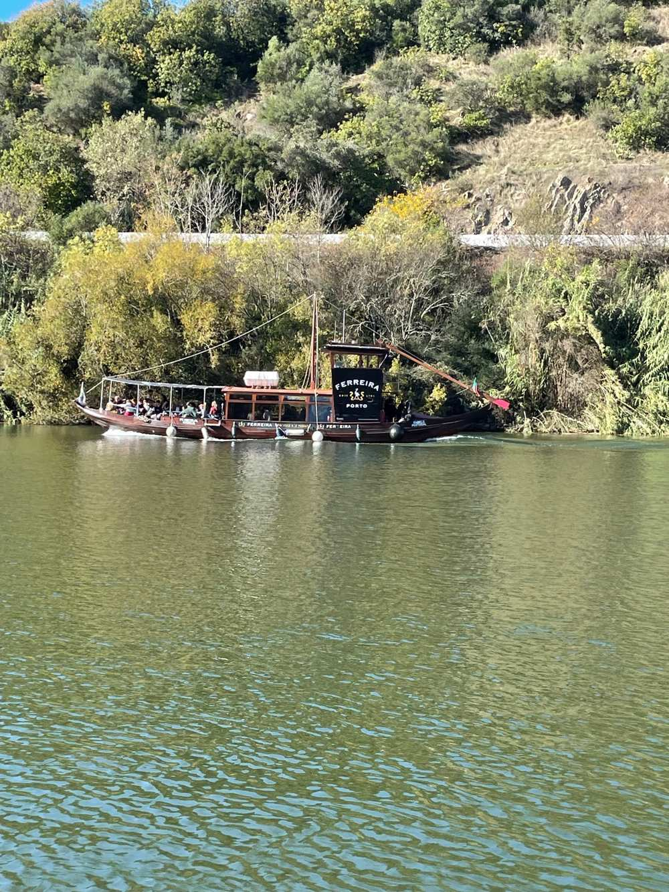
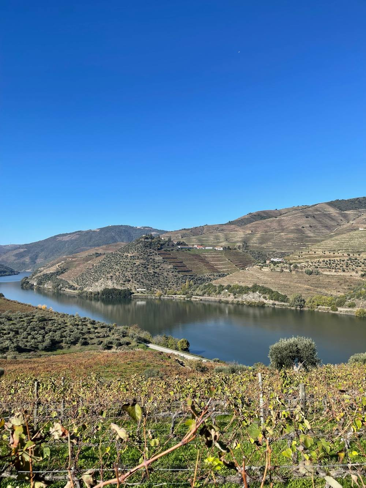
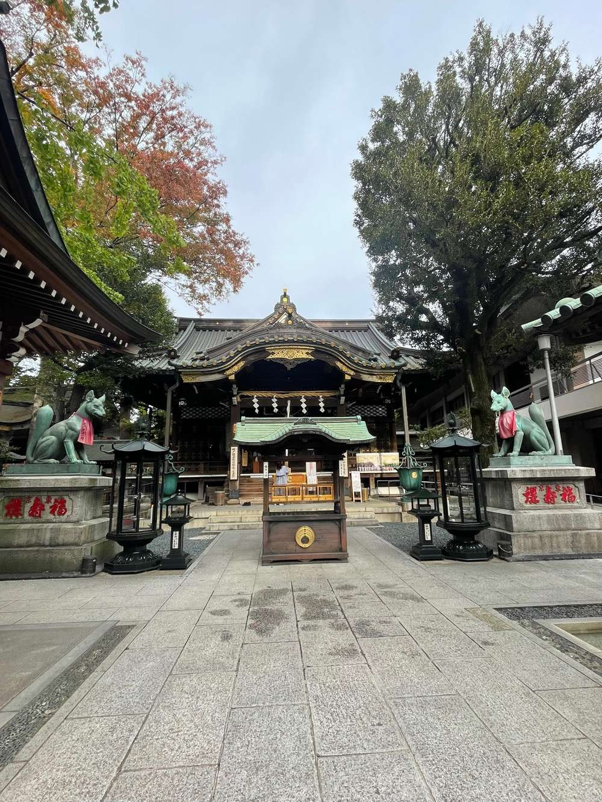
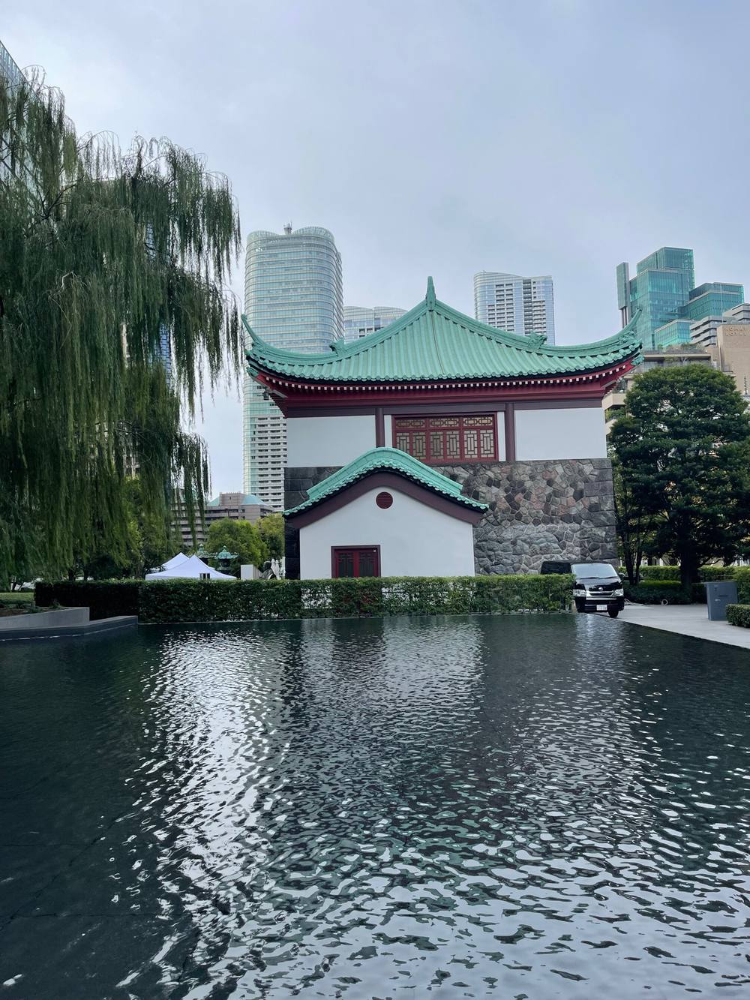
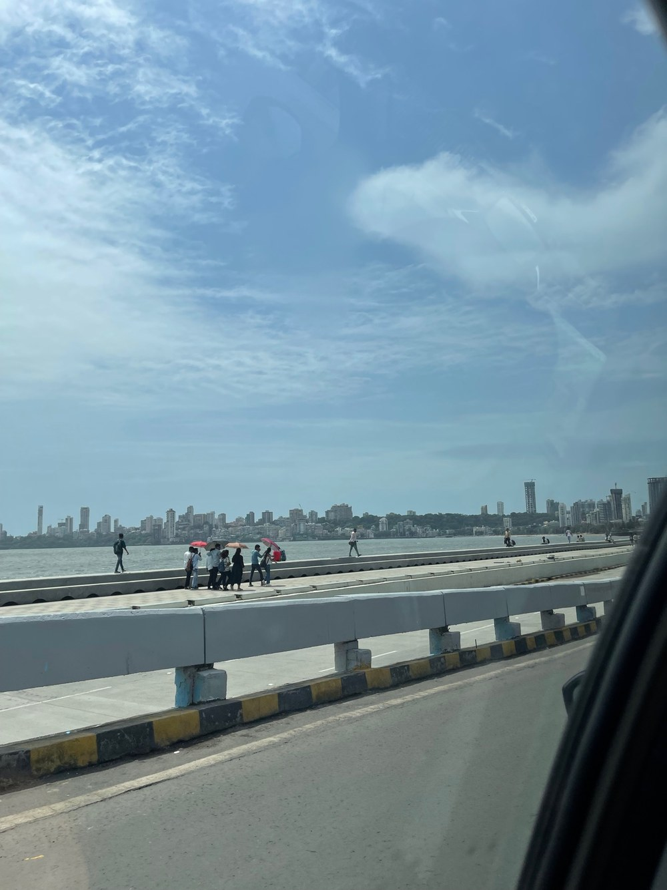
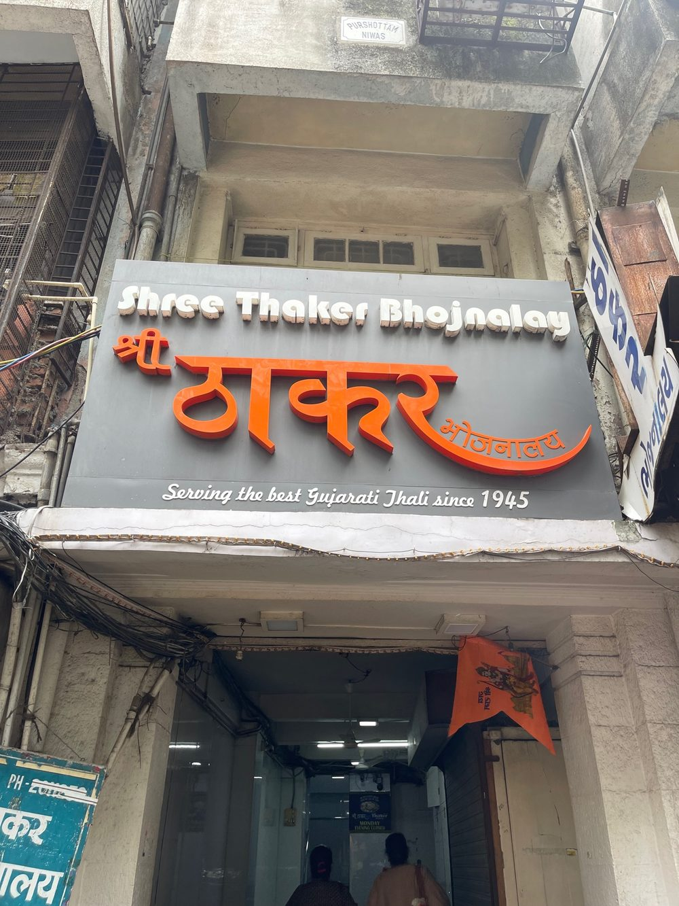

Food is never just food. It is history, geography and trade routes on a plate — and wine is all of that, aged in a cellar. These are a few of the rabbit holes taste has led me down.
Port Wine in Porto


I spent the last 5 days in the city of Porto and went into various "rabbit holes" driven by my curiosity to know more about all kinds of things…. This one was about Port Wine. Had the opportunity to visit vineyards in the Douro Valley, and taste a variety of 20, 30 and 40 year old Port… wow did I like it! And then I dug into the history of the wine, its trade and the role of Porto.
Porto plays a crucial role in the port wine industry as the city where this renowned fortified wine is traditionally shipped and aged. The wine is produced from grapes grown in the Douro Valley, but due to the valley's climate, it is transported to Vila Nova de Gaia, a suburb of Porto, for aging in its temperate climate. Porto's historical connection to port wine dates back to the 17th century when it became a major hub for exporting this wine globally. The city's port wine cellars are integral to its cultural and economic identity.
And I saw 150+ year old accounting records of export transactions and customs duties at the Old Customs House in Porto!
Curiosity driven human exploration keeps me going!
First posted on LinkedIn, November 2024.
Why I Love Japan


I am in Japan, spoke yesterday about "Leadership in the World of AI" at the thinkrun Holdings Global Seminar, was amazing to share the stage with Yoshiaki Sakito and all his amazing stories and learnings from working with Steve Jobs at Apple.
But I wanted to talk about something else the last few days reminded me of: why do I love Japan so much? What is it that puts it on top of many other countries and cultures? I have thought deeply about this:
- it's the deep and complex history
- it's the gardens and greenery in spite of a dense population
- it's the amazing food and of course sake
- it's the people… so respectful in their attitude and behaviour
- it's their long term thinking in everything
- it's the importance they give to trust and relationships
- it's the minimalist in everything… neat simple not loud and garish
- it's the effort that the man or woman on the street makes to understand English and speak the few words they manage with a smile
- it's the fact that in a crowded street in Tokyo or Kanazawa at a pedestrian crossing 20 people will wait 2 mins without crossing even though there are no vehicles in sight
- it's the perfection and exactness of everything
- it's the cleanliness of everything
- it's the fact that you can set your watch to Shinkansen train departures
- it's the fact that in 4 mins the whole train is cleaned completely to turn it around for next trip
It's ikigai and zen thinking!!
I can go on and on!!
First posted on LinkedIn, November 2025.
Bombay, My Real Home


My favorite city that in spite of having led a nomadic life jumping across the globe I still call my real "home" — Bombay (never got used to Mumbai).
No other city where you can still go to the best Gujarati Thali on planet earth Thaker Bhojanalaya around since 1945…. The last mile to get there is 30 mins by car for 600 meters in Kalbadevi, it's that crazy crowded…. after a 29 kms 30 mins zip through the Sea Link Bridge and the new Coastal Road including the part underground… from North West Bombay… it's a great ride!
The people, the attitude, the energy, the food, the variety, the noise and bustle… the old and dilapidated comingling with the ultra modern… even a 5 Rupees (6 cents) transaction gets a digital handheld machine out to pay by UPI (the India Universal Payment).
Nothing makes me feel more at home than Mumbai… even though I love London and New York and Gurgaon and… and… but once a Bombayite always a Mumbaikar!
First posted on LinkedIn, August 2024.